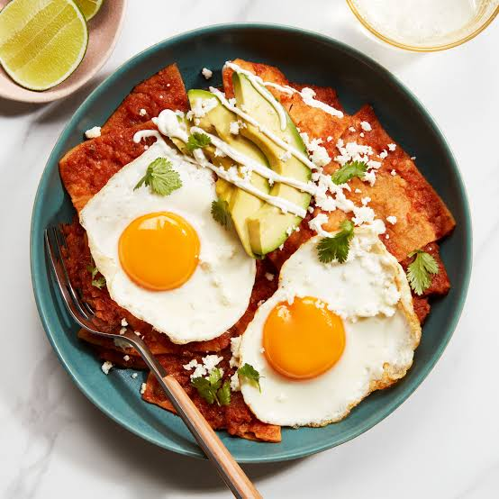

Payday Chilaquiles
Ingredients
- Tortillas
- El Pato sauce
- 2 eggs
- Cooking oil
- Salt and pepper
How to Make It
Cut tortillas into pieces and cook them in a pan with a little oil. Add El Pato sauce and toss until coated. Top with two cooked eggs and season with salt and pepper.